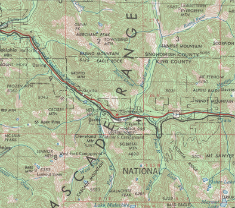
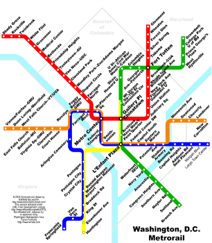
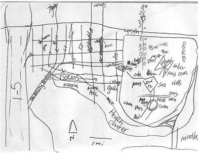
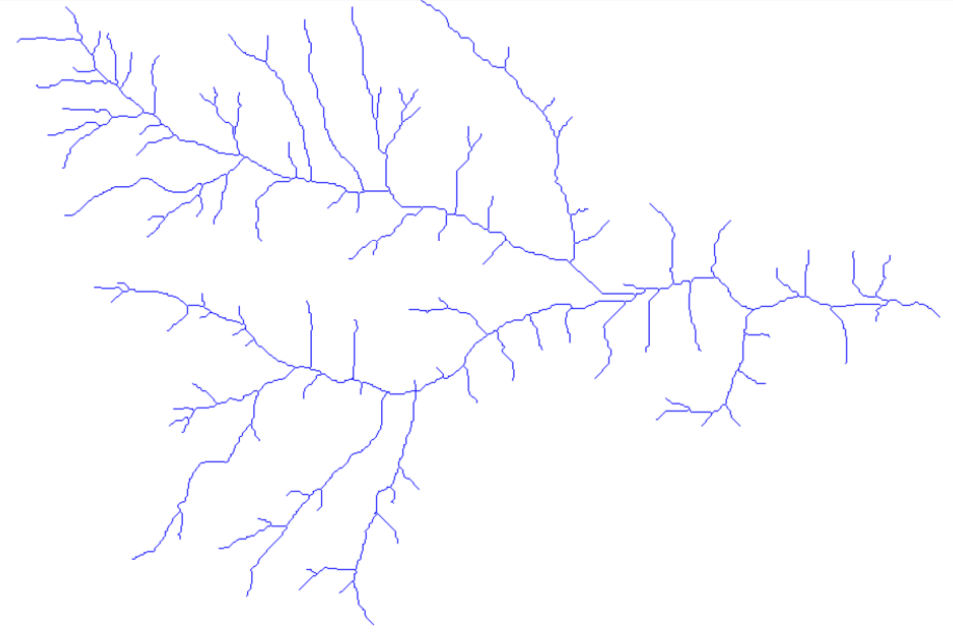
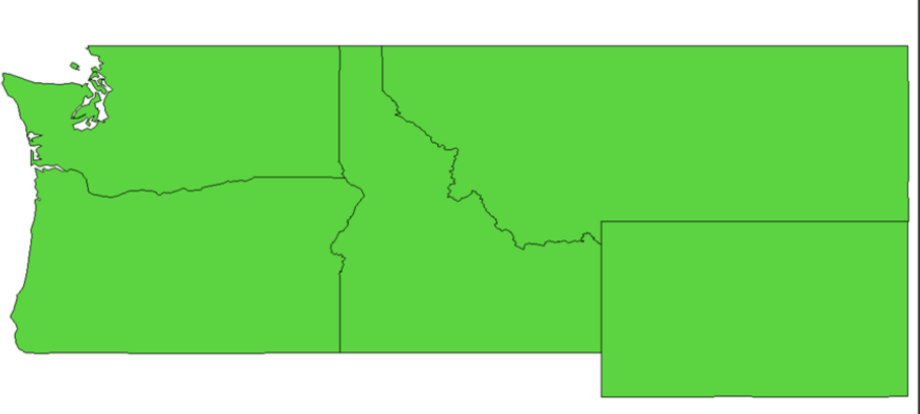
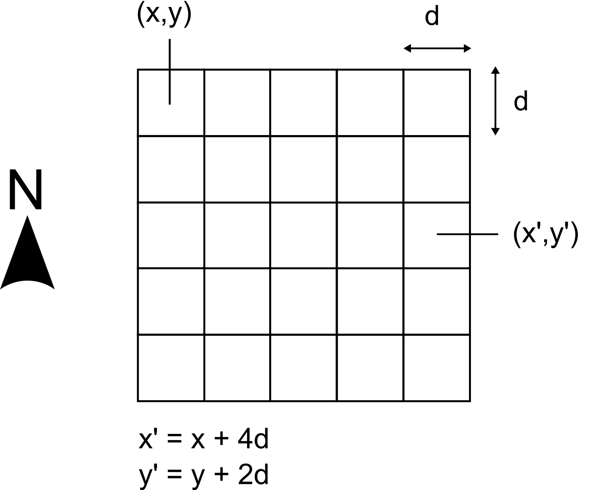
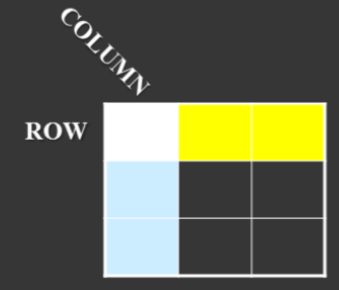
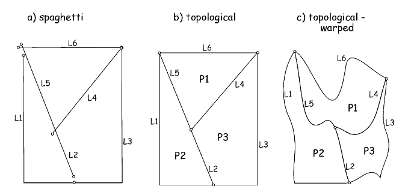

Modelos de datos geoespaciales (IMSE1014)
Introducción a la Tecnología de Información Geográfica (IMSE1014)
Contenidos
- ¿Qué hemos visto?
- Conceptos del espacio
- Modelos de datos geoespaciales
- Tipos de modelos de datos geoespaciales
- Atributos
¿Qué hemos visto?
¿Qué son los SIG?
.center[Es un sistema basado en computador para ayudar a la recolección, mantención, almacenamiento, análisis, salida y distribución de
información y datos espaciales y no-espaciales]
1.- Recolección: a la habilidad del SIG de tomar diferentes tipos de información.
2.- Mantención: capacidad de mantener los datos recolectados actualizaods.
3.- Almacenamiento: la estructura de codificación de la información que es guardada en forma digital en el computador.
4.- Análisis: proceso de transformar los datos a información.
5.- Salida: se refiere a los mapas, reportes y estadísticas.
6.- Distribución: intercambio de datos espaciales y no-espaciales.
¿Los componentes del SIG?
Hardware: ej: computador, celularSoftware: ej: QGISDatos: con lo que se trabaja en los SIG, ej: datos censalesMétodos: funciones algorítmos matemáticosPersonas: todo aquel que usa un SIGRed: tanto la internet como la forma colaborativa de trabajar en forma de red
2. Conceptos del espacio
Conceptos Fundamentales de Análisis Espacial
1.- Espacio
2.- Localización
3.- Distancia
Espacio
El espacio se puede medir en términos absolutos, relativos y cognitivos
Espacio absoluto
Se puede pensar como un espacio matemático
Implica la precisa medición de la ubicación (x,y,z)

Espacio
El espacio se puede medir en términos absolutos, relativos y cognitivos
Espacio relativo
Espacio topológico
Se preocupa de la conección entre lugares

Espacio
El espacio se puede medir en términos absolutos, relativos y cognitivos
Espacio cognitivo: refleja las creencias, experiencias y percepciones de las personas sobre los lugares.

Localización
La ubicación/localización se puede medir en términos absolutos, relativos, cognitivos y nominales
Absolutos: Latitud/Longitud
Relativos: sitio y situación
Cognitivos: nombre del lugar
Nominal: ¿Dónde estabas tú cuando….?
Localización
Absoluta
. . .
se considera un descriptor inequívoco de la ubicación, típicamente expresado como una coordenada, como la latitud y la longitud.

Localización
Relativa: se puede medir usando sitio y situación
Sitio:
Atributo físico de un lugar
Ejemplo: terreno, suelo, vegetación, fuente de agua, entorno construido, etc
Situación
ubicación de un lugar en relación con otros lugares y actividades humanas
Ejemplo: a 50km de Santiago, cerca de una materia prima (cobre), lejos de oportunidades laborales
Localización
Cognitiva: se refiere a las imágenes cognitivas personales de lugares y regiones compiladas a partir de conocimientos, experiencias e impresiones personales.

Localización
Nominal: Una ubicación nominal es una ubicación en la que se recuerda haber estado cuando se enteró de un evento que tuvo lugar en una ubicación diferente.
Es importante tener en cuenta que los
sistemas de mediciónque representan laubicación, por ejemplo,absoluto,relativo,nominal, sonsistemas culturalesque están integrados en diferentes culturas y cosmovisiones y se pueden inscribir en los lugares.
Distancia
se puede definir en términos absolutos, relativos y cognitivos
Absoluto: es una unidad de medida física, por ejemplo, el número de kilometros entre el centro de la ciudad de Santiago y Rancagua.
Relativa: se calcula midiendo la distancia, utilizando métricas como tiempo, esfuerzo o costo. Ej. Cuanta bencina se gasta.
Cognitiva: se refiere a la percepción individual de cuán lejos son las cosas
Primera ley de la geografía
“Todo está relacionado con todo lo demás, pero las cosas
cercanasestánmás relacionadasentre sí”
Waldo Tobler(profesor emérito de la Universidad de California en Santa Bárbara, Departamento de geografía)
3. Modelos de datos geoespaciales
¿Qué son?
. . .
- medios formales de representar información
espacialmentereferenciada.
. . .
- vista simplificada de
entidades físicas
. . .
- una
conceptualizaciónde la realidad
Componentes
Compuestos de dos partes
Objeto
Atributo

Ejemplo 1
Ejemplo 2
Tipos de Fenómenos Espaciales
1.- Discretos
2.- Continuos
Fenómenos Espaciales Discretos
Discreto:
individualmentedistinguiblesNo existeentre observaciones
Ejemplos:
rios,lagos
caminos

Fenómenos Espaciales Continuos
Continuos:
Existeentre observacionesRepresenta datos de
naturaleza continua
Ejemplos:
temperatura
elevación

Fenómenos espaciales continuos
Organización (capas)
Típicamente, el fenómeno espacial se organiza en modelos de datos geoespaciales separados por tema.
Organización (capas)

Organización (capas)
Organización (capas)
4. Tipos de modelos de datos espaciales
Tipos de modelos de datos espaciales
- Dos modelos de datos espaciales
. . .
- Vectorial
. . .
- Raster
Datos Vectorial
Define objetos discretos
- Ej. hidrante, caminos, rios,
Hay tres tipos de datos vectorial
Punto
Linea
Polígono
están compuestos de coordenadas y atributos.
Datos Vectorial
Puntousa un par de coordenadas para definir la ubicación
se consiera que no tiene dimensión (puede tener dimensión real, pero para el propóstio del SIG se considera dimención cero)
la información de atributos se adjuna al punto
Ej. postes de luz, estación agroclimática, ubicación de un crimen
Datos Vectorial
Punto

Datos Vectorial
Linease define por un conjunto ordenado de coordenadas.
cada linea (y curva) están formadas de múltiples segmentos de linea
Ocasionalemnte, lineas curvas se representan matemáticamente
el punto de partida de una linea es un
nodopuntos intermedios de la linea son
verticeslos atributos pueden estar adjuntos a toda la linea, un nodo o vertice.
Ej: caminos, tuberias, linea eléctrica
Datos vectoriales
Red de drenaje representada por lineas

Datos Vectorial
Polígonoformado por un grupo de lineas conectadas
polígonos deben ser cerrados. El punto de partida y de término debe ser el mismo.
los polígonos tienen una región interior
información de atributos se adjunta al polígono
Ej. lagos, ciudad, límites administrativos
Datos Vectorial
Polígono

Modelos de datos espaciales
Dos modelos de datos espaciales
Vectorial
Raster
Datos Raster
Representa objetos continuos Ej. temperatura, elevación
conjunto regular de celdas (matriz) en un patrón cuadrículado
objetos del mundo real son representados por valores en las celdas

Datos Raster

Datos Raster
Cargando paquete requerido: spLinking to GEOS 3.12.2, GDAL 3.9.3, PROJ 9.4.1; sf_use_s2() is TRUEDatos Raster
Datos Raster
Datos Raster

Resolución datos Raster
El tamaño de la celda (pixel) corresponde a la resolución
hay una compensación entre la resolución y el tamaño del archivo raster
la coordenada de la celda corresponde al punto central del pixel
la coordenada aplica al área total de la celda
Resolución datos Raster
Cada celda raster representa una determinada área y el valor asignado representa toda esta área.
el valor de la celda raster representa el valor promedio, más común, o el único valor cubierto por la celda.
Resolución datos Raster

Resolución datos Raster
Datos Raster

Datos Raster
Ejemplo: uso de suelo (landcover)

Zambrano et al. (2016)
Raster vs Vectorial
Raster
buenos para cambios frecuentes
modelo de datos simple
fáciles superposiciones
mejores para imágenes digitales
Vectorial
almacenamiento de datos compacto
ideal para representaciones lineales y de redes
seres humanos más familiarizados con datos vectoriales
puede contener topología
5. Atributos
Atributos
Atributos
- Registrar características
no espacialesque describen entidades espaciales
Dispuestos en tablas :
Fila:
entidadColumna:
atributo

- se puede almacenar como un formato de archivo plano, o en un sistema de gestión de base de datos (SGBD).
Atributos

Categorias de atributos
Nominal
Ordinal
Intervalo
Razón
Categorias de atributos
NominalEntrega información
descriptivaEj. color, nombre de ciudad, tipo de plantanoimplica ningúnordenTambien pueden ser imágenes, sonidos o peliculas
Categorias de atributos
Ordinalimplicanun ranking uordenbasado en sus valores.los valores pueden ser texto descriptivo o numérico
- Ej. alto/mediano/bajo o 1/50/100
especifiqua
solo rango, y no escala- Ej. alto/50 es mayor que bajo/1 pero no sabemos por cuanto
Categorias de atributos
Intervaloorden de rango y magnitud está implícito
Notiene un cero natural- Usa un cero arbitrario
Usa atributos númericos
- Ej: 30° C son 10°C mayor que 20°C
suma y resta aplicaperono multiplicaciónya que los valores son absolutos de un cero arbitrario.
Categorias de atributos
Razónorden de rango y magnitud está implícito
Tiene un cero natural
Usa atributos númericos
- Ej: 50 km/hr es dos veces más rápido que 25 km/hr
suma, resta, división y multiplicación tiene sentido, ya que los valores son absolutos de un cero natural
Categorias de atributos
Identficar columnas como:
- Nominal
- Ordinal
- Intervalo/Razón


Tipos de datos de atributos
. . .
- los
datosde atributos songuardadosen lamemoria
. . .
- el tipo de
datodelatributonecesita serdefinidopara uneficienteuso de lamemoriay determinación de la aplicabilidad operativa
. . .
hay cuatro tipos comunes de datos
entero
flotante/real
texto/caracter
fecha
Tipos de datos de atributos
1.- Entero
Sin punto decimal
se puede usar para
cálculos matemáticos- sin embargo el resultado de una fracción será redondeado
Ejemplos:
- 1
- 2458
- -54
Tipos de datos de atributos
2.- Flotante/real
Número decimal
se puede usar para
cálculos matemáticosEjemplos:
1,4532
254783,1
-845,157
Tipos de datos de atributos
3.- texto/caracter
no se puede usar para cálculos matemáticos
el texto puede ser manipulado, ej. para encontrar subcadenas o para cortar cadenas.
Ej.
“A”
“SIG”
“Avenida Bernardo O’Higgins 2345”
Tipos de datos de atributos
4- fecha
guarda fechas
nose puede usar paracálculos matemáticossin embargo, se puede usar para
calcularel periodo detiempoentre dos fechasEj.
12-12-1980
12 de diciembre 1980
12/12/80
6. Consideraciones con datos vectoriales
Inclusiones en polígonos y generalización de límites.
Topología
La topología expresa las relaciones espaciales entre entidades vectoriales adyacentes o conectadas (puntos, polilíneas y polígonos) en un SIG.
Los datos topológicos o basados en topología son útiles para detectar y corregir errores de digitalización.
La topología es necesaria para realizar algunos tipos de análisis espacial, como el análisis de redes.
Topología

Topología

Topología
Tipos de formatos de archvios en SIG
Datos Vectoriales
- ESRI Shapefile : formado por una serie de archivos con el mismo nombre pero diferente extensión.
shp: es el archivo principal que almacena la geometría de la entidad; necesario.
.shx: es el archivo de índice que almacena el índice de la geometría de la entidad; necesario.
*.dbf: es la tabla dBASE que almacena la información de atributos de las entidades; necesaria.
Entre la geometría y los atributos existe una relación de uno a uno, basada en el número de registro. Los registros de atributo del archivo dBase deben estar en el mismo orden que registros del archivo principal.
Tipos de formatos de archvios en SIG
Datos Raster
GeoTIFF: es un estándar de metadatos de dominio público que permite incrustar información de georreferenciación en un archivo TIFF.
TIFF (Tagged Image File Format) es un formato de archivo informático para almacenar imágenes de mapa de bits.
La posible información adicional incluye proyección de mapas, sistemas de coordenadas, elipsoides, datos de referencia y todo lo demás necesario para establecer la referencia espacial exacta para el archivo.
Tipos de formatos de archvios en SIG
Vectorial y raster
El estándar de codificación GeoPackage describe un conjunto de convenciones para almacenar lo siguiente dentro de una base de datos SQLite:
- características vectoriales
- conjuntos de matrices de mosaicos de imágenes y mapas ráster a varias escalas
- atributos (datos no espaciales)
- extensiones